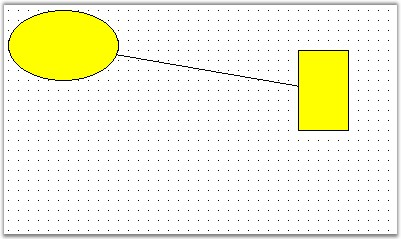
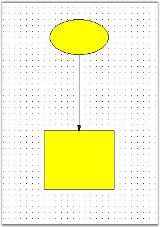

Connectors and lines have the following different decorators.
· Circle
· CircleCross
· CirclereverseArrow
· Cross45
· Cross90
· CrossreverseArrow
· Custom
· Diamond
· DimensionLine
· DoubleArrow
· DoubleCross
· Filled45Arrow
· Filled60Arrow
· FilledCircle
· FilledDiamond
· FilledFancyArrow
· FilledSquare
· None
· Open45Arrow
· Open60Arrow
· OpenFancyArrow
· ReverseArrow
· ReverseDoubleArrow
· Square
Connecting two Nodes with Line Connector
The following code snippet creates links between two nodes.
|
[C#]
protected void Page_Load(object sender, EventArgs e) { Syncfusion.Windows.Forms.Diagram.Ellipse ellipse = new Syncfusion.Windows.Forms.Diagram.Ellipse(10, 10, 110, 70); Syncfusion.Windows.Forms.Diagram.Rectangle rectangle = new Syncfusion.Windows.Forms.Diagram.Rectangle(300, 50, 50, 80); Syncfusion.Windows.Forms.Diagram.LineConnector lineconnector = new Syncfusion.Windows.Forms.Diagram.LineConnector(new System.Drawing.PointF(10, 200), new System.Drawing.PointF(300, 250)); this.DiagramWebControl1.Model.AppendChild(ellipse); this.DiagramWebControl1.Model.AppendChild(rectangle); ellipse.CentralPort.TryConnect(lineconnector.HeadEndPoint); rectangle.CentralPort.TryConnect(lineconnector.TailEndPoint); this.DiagramWebControl1.Model.AppendChild(lineconnector); } |
|
[VB]
Protected Sub Page_Load(ByVal sender As Object, ByVal e As EventArgs) Dim ellipse As New Syncfusion.Windows.Forms.Diagram.Ellipse(10, 10, 110, 70) Dim rectangle As New Syncfusion.Windows.Forms.Diagram.Rectangle(300, 50, 50, 80) Dim lineconnector As New Syncfusion.Windows.Forms.Diagram.LineConnector(New System.Drawing.PointF(10, 200), New System.Drawing.PointF(300, 250)) Me.DiagramWebControl1.Model.AppendChild(ellipse) Me.DiagramWebControl1.Model.AppendChild(rectangle) ellipse.CentralPort.TryConnect(lineconnector.HeadEndPoint) rectangle.CentralPort.TryConnect(lineconnector.TailEndPoint)
Me.DiagramWebControl1.Model.AppendChild(lineconnector) End Sub |

Figure 36: Connection Property Settings
We can change the appearance of the connectors using its properties through code. The below sample illustrates the line properties.
|
[C#]
protected void Page_Load(object sender, EventArgs e) {
Syncfusion.Windows.Forms.Diagram.Ellipse ellipse = new Syncfusion.Windows.Forms.Diagram.Ellipse(160, 60, 100, 60); Syncfusion.Windows.Forms.Diagram.Rectangle rectangle = new Syncfusion.Windows.Forms.Diagram.Rectangle(150, 250, 120, 100); Syncfusion.Windows.Forms.Diagram.LineConnector lineconnector = new Syncfusion.Windows.Forms.Diagram.LineConnector(new System.Drawing.PointF(10, 200), new System.Drawing.PointF(300, 250)); this.diagram1.Model.AppendChild(ellipse); this.diagram1.Model.AppendChild(rectangle); ellipse.CentralPort.TryConnect(lineconnector.TailEndPoint); rectangle.CentralPort.TryConnect(lineconnector.HeadEndPoint); this.diagram1.Model.AppendChild(lineconnector); lineconnector.HeadDecorator.DecoratorShape = DecoratorShape.Filled45Arrow; lineconnector.LineStyle.LineColor = Color.MidnightBlue; lineconnector.HeadDecorator.FillStyle.Color = Color.MidnightBlue; lineconnector.HeadDecorator.Size = new SizeF(10, 5); } |
|
[VB]
Protected Sub Page_Load(ByVal sender As Object, ByVal e As EventArgs)
Dim ellipse As New Syncfusion.Windows.Forms.Diagram.Ellipse(160, 60, 100, 60) Dim rectangle As New Syncfusion.Windows.Forms.Diagram.Rectangle(150, 250, 120, 100) Dim lineconnector As New Syncfusion.Windows.Forms.Diagram.LineConnector(New System.Drawing.PointF(10, 200), New System.Drawing.PointF(300, 250)) Me.diagram1.Model.AppendChild(ellipse) Me.diagram1.Model.AppendChild(rectangle) ellipse.CentralPort.TryConnect(lineconnector.TailEndPoint) rectangle.CentralPort.TryConnect(lineconnector.HeadEndPoint) Me.diagram1.Model.AppendChild(lineconnector) lineconnector.HeadDecorator.DecoratorShape = DecoratorShape.Filled45Arrow lineconnector.LineStyle.LineColor = Color.MidnightBlue lineconnector.HeadDecorator.FillStyle.Color = Color.MidnightBlue lineconnector.HeadDecorator.Size = New SizeF(10, 5) End Sub |

Figure 37: Diagram with Connector Property Settings